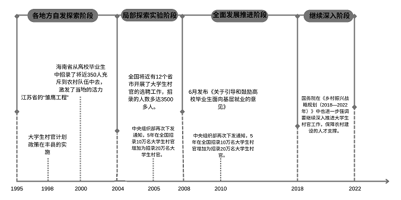

返乡的“村官”
乡村是一片广阔的天地，需要返乡的“村官”们用汗水填补田地的沟壑，用青春梳理大山的脉络。 日上三竿，伴随着村庄里袅袅炊烟，在他们心中飘飘升起的是乡土气，在他们心中重重落下的是“村官”情。
自1995 年江苏省的“雏鹰工程”起，中央和地方政府十分重视大学生“村官”政策的发展和推广。
2008 年党中央发布《关于选聘高校毕业生到村任职工作的意见》，开始在全国范围内实施大学生“村官”计划。
2018 年国务院在《乡村振兴战略规划（2018—2022年）》中也进一步强调要继续深入推进大学生“村官”工作，保障农村建设的人才支撑。
大学生“村官”政策发展主要经历了“各地方自发探索阶段”（1995~2004），“局部探索试验阶段”（2004~2008），“全面发展推进阶段”（2008~2018）和“继续深入阶段”（2018~2020）四个阶段。
1995-2022年大学生““村官””相关政策的发布
数据来源：《大学生“村官”推动了村级集体经济发展吗？——基于中国第三次农业普查数据》
数据来源：中国青年网 http://cunguan.youth.cn/cgxw/201708/t20170809_10476904_1.htm
数据来源：中国青年网 http://cunguan.youth.cn/cgxw/201708/t20170809_10476904_1.htm
乡村的女儿
家庭的影响
文秀来自于一个普通的家庭，家庭结构简单，她是家里最小的孩子，上面有一个哥哥和一个姐姐。他们家中条件并不富裕，经济拮据，文秀家里唯一的收入是黄爸爸种芒果的收入。为了养活三个孩子，黄爸爸早出晚归，在芒果地忙活。直到2016年，她研究生毕业的时候，文秀家才在政府的帮助下脱贫。
文秀读研期间曾带父亲来北京，文秀表示这里赚得多，父亲却告诉她说：”我们不需要钱多，你入了党，一定要为党工作，到最困难的地方，我们家乡在山里面，很多人正经历着困难，等着你。钱是珍贵的，但价值不高。人的生命价值用得好，高于一切。” 不求金钱满袋并且追求人生更高的价值的教育是文秀从一个一辈子没富过普通父亲得到的，这也是文秀可以一心扑在百坭村的脱贫攻艰的原因之一。
图一：黄文秀和她的父亲
从百色市主城区出发，向西行使76公里，通过广昆高速、银白高速，跨过川流不息的剥隘河，与大朗山、坡三搜山、琴抱岭擦肩而过，再经过三柏村公路，就到了黄文秀的家——百色市田阳区巴别乡德爱村多柳屯。 这个巴别乡是百色市唯一没有地表水的乡镇，这里没有电，没有一条像样的路，更没有一所可供读书的学校。
革命老区百色，当年是全国14个集中连片特困地区之一，文秀家乡巴别乡只是208个贫困村之一，当时仍有19万余贫困人口未脱贫，在这样的严峻形势下，百色急需大量人才返乡建设，扎根到基层中，实地调研各地具体情况，从而做出针对性措施帮助各地完成脱贫工作。
志同道合的一群人
“ 扶贫的路是一步一个脚印慢慢走出来的。中华大地上贫困发生的地方你看得见一个又一个身影。 ”
据最新的权威数据统计，从2008年3月，中组部和教育部、财政部、人力资源社会保障部联合下发《关于选聘高校毕业生到村任职工作的意见（试行）》后，31个省区市和新疆生产建设兵团部署开展了大学生“村官”工作，越来越多的大学生将成为“村官”放于职业规划中。
图二：秦玥飞与村民
秦玥飞 帮助硬化村级道路、安装路灯、改善农田灌溉设施、引进信息化教育设备、改扩建敬老院、提供校车安全保障等。
张小娟 献力于甘南藏族自治州舟曲县的扶贫事业。2019年10月7日19点40分许，在下乡扶贫督察验收的返途中，不幸坠江
清华高材生周倍良 ，为帮助农民增收致富搭建网络平台、为帮助果农销售水果撰写项目计划书，积极为农村经济发展献计献策。
郝新江 身残志坚，辞去教师工作担任起了山西省朔州市平鲁区西水界乡前沙城村村民的政策宣传员、决策参谋员、活动组织员、农村信息员。
在这样的环境下，一直心系家乡建设文秀在硕士研究生毕业后，坚定地选择了考取广西定向选调生。
在文秀返乡的道路上，她并不是孤单一人。在读研期间，她就遇到了和她同样来自广西的陈丽美。她们一起去参见广西选调生的宣讲，一起复习考试。在陈丽美抉择之时，文秀说：”要不我们一起参加选调生？"，也就是文秀的这句话，让她坚定了回乡的信念，在家乡的建设中出一份力。
丽美不是文秀唯一的同伴。在她刚刚回到乡村时，她与其他回乡做“村官”的同伴建立微信群，在微信群中交流经验，相互扶持。同时，与她同悲喜、共进退的，还有同样扎根百色的其他“村官”们，在她回到乡村后，那伟村的、镇里的书记还有村民也曾与她一起走访，记录村中的详细情况。
扶贫日记 2018年4月8日 星期天
上午入户了解情况，到的地方是者乐屯。
蒙隆球、韦乃情两户2018年如无意外情况，脱贫没问题。
晚上7：30在镇里参加工作部署会，黄保锦书记向我们传达了县一级脱贫攻坚工作计划和目前镇一级的工作安排，并向我们强调要转化角色，将自己的青春奉献给脱贫攻坚事业。
扶贫日记 2018年4月15日 星期天
参加乐业县新化镇2018年预脱贫户专题研判会。
参会人员：方志高、黎明彰、黄茂兵、马天祥。
先是那伟村汇报，然后是伶弄村汇报。
晚上8点轮到我们百坭村汇报。
通过这个研判会发现了几户边缘户，这将是我们今后工作的重点。
扶贫日记 2018年12月9日 星期天
上午和那伟村张书记一起到易地安置点查看贫困户的入住情况。那伟村工作队非常认真负责，尤其是张书记，主动要求连任，我非常敬佩他，工作也非常扎实，值得我学习。走访过程中，发现还有1户没有按要求张贴对联，家中没有生活用品。
文秀，她从来不是一个人战斗。
曾经的百坭村
砂糖橘是致富经
在百泥村，共有1000亩砂糖橘，砂糖橘产业覆盖60.30%的贫困户——120户共565人，覆盖53%的非贫困户——139户655人。沙糖桔是全村的支柱产业，但是村民由于缺乏技术、管理不到位并且无法拓展市场，沙糖桔的产量始终无法突破，不能成为村民的致富之路。
文秀书记到村后上山下地亲自探测，不断走访调查。通过数据对比分析，她发现百坭村想要致富还是得靠种植这砂糖橘。种植手段不成熟，她从城里请来了专家专门教导村民如何种植砂糖橘。没有销路村，就联系好了火爆的电商平台。产量、销售双管齐下，村民的砂糖橘销售一空，同时建立起百坭村电商服务站。
全村种植砂糖橘从1000余亩发展到2000余亩，仅2018年，黄文秀就通过建立电商服务站，帮助全村群众销售砂糖橘4万多斤，销售额达22万元左右，为30多户贫困户创收，每户增收2500元左右，成功让砂糖橘产业凤凰涅槃，让沙糖桔成为了村民的致富经。
图三：黄文秀在橘园
百坭村里“百花香”
兴学新气象
“ 在2018年，百坭村无义务教育阶段辍学的儿童，6～16周岁在读人口为272人，其中有112人为贫困人口，全村已有42户办理了‘雨露计划’，但仍有26户人家因学致贫。百坭小学也已经没有老师和学生，孩子们都是去另一个村的谐里小学上学，路途比较远，很多孩子都因此不想上学。”文秀回到家乡面对的就是这样落后的教育状况。
于是，文秀书记一方面帮助因学致贫的家庭办理“雨露计划”，一方面积极发动自己的师范生的优势，组织大学生来百坭村开展暑假实践活动，同时积极举办活动，组织放假在家的中小学生开展活动，组织村规民约吟诵比赛，让学生们知道了怎么守纪律、讲文明、爱卫生，创造百坭村新风貌，让学生们明白了读书的意义，整个百坭村不再有辍学的现象。
图四：黄文秀与育学活动
想致富先修路
农村没有“路”，致富有难度。 在走访了解百坭村基本状况时，文秀书记发现山上片区5个屯的通屯道路硬化问题严重影响村民生活和生产。在2014年，这5个屯已经修通通屯的砂石路，但南方雨季长、雨量多，多处路段砂石已被雨水冲刷流失，一下雨，路面就泥泞不堪，坡度较陡的路段雨季摩托车都不能通行，还有一些路段因泥石流、滑坡等出现了垮塌。由于全村的产业都集中在这5个屯的范围内，路况问题已经不仅仅是影响村民出行，更是阻碍了百坭村的发展致富路。
图五：黄文秀与村民在未修建的公路上
在《文秀的扶贫日记》中，旁人曾提到过：在一次走访途中，文秀看到了一个骑摩托车的老人不小心摔倒在路上的坑里，想到这样的事情可能还会发生，她觉得非常危险，希望将百坭村道路的亮化和硬化项目尽快落实，把村里的路修好，把路灯安装起来，为老百姓提供方便。
带着为乡亲们谋福祉的坚定信念，终于在2019年将连接百坭村11个屯的水泥路修建完成，全长22公里，被乡亲们亲切地称为脱贫致富的“产业路”。
图六：修建后的白坭村
2018年初，百坭村全村只有1个垃圾焚烧炉，但已年久失修不能正常使用，村中也未设有专职保洁员，但有8个屯的环境卫生管理是由生态护林员兼任的，仅4个屯的蓄水池已完成建设。直至同年8月份，文秀书记带领全村完成了屯内1.5公里的道路硬化，4个蓄水池的新建，一个屯17盏路灯的亮化工作，获得了2018年度“乡风文明”红旗村荣誉称号。
今朝梦圆
虽然只有短短几个月，但是文秀书记的扶贫路走得艰难。这条心中的长征，需要拿出极大的勇气和信心，克服各种困难。她带着坚定的信心和对百坭村扶贫工作的热情，勇于面对各种挑战，最终打出了一场漂亮的脱贫战。
2018年4月1日，黄文秀担任百色市乐业县新化镇百坭村党支部第一书记。
2018年6月，黄文秀走访全村195户贫困户，绘制百泥村贫困户分布示意图。
2018年6月底，完成新农保工作。
2018年7月30日，文秀与支书、两委决议在那用屯建设砂糖橘产业园。
2018年夏天，文秀邀请她的研究生同学陈乐，带领10多名本科学生到百泥村开展暑假实践活动。
2018年8月，百坭村获得2018年度”乡风文明红旗村“荣誉称号。
2018年9月17日，百坭村全村65%达到无害化厕所标准。
2018年，全村通过易地扶贫搬迁脱贫18户56人，教育脱贫28户152人，发展生产脱贫42户209人，共计88户417人。
2019年，山上片区5个屯的同屯道路硬化完成五分之三，三条路被列入乐业县2019年第一批财政专项扶贫资金安排项目。
2019年，全村通过易地扶贫搬迁脱贫18户56人，教育脱贫28户152人，发展生产脱贫42户209人，共计88户417人， 贫困发生率降到了2.7%。
文秀书记积极前往贫困家庭家中做实地调研，通过实地查看和换位思考，从“新手”变“熟路”，不断总结出百坭村脱贫路上要克服的困难以及解决方案，产业，教育，乡风文化，乡村面貌全面发展，仅用一年多的时间将百坭村从深度贫困村建设为“乡风文明”红旗村。
多年期盼，今朝梦圆。
文秀将无数”前辈“的乡村事业传承，来者则接过文秀的接力棒将这种精神发扬。 现在，有越来越多的像文秀书记一般的大学生、年轻人愿意做“村官”，愿意扎根基层，怀揣着为乡村发展做贡献的热情，服务为农，敢拼敢闯，一心为百姓幸福谋福祉，并取得优异成绩，努力在各自的岗位上发光发热。
任重道远
据《“大学生村官” 如何服务乡村振兴？ —基于第三次农业普查 10700 个村级数据的实证研究》一文中的调研，其运用PSM算法进行数据分析，从以下七个指标和“村官-村落”层面上综合考察大学生“村官”对农村的影响。
调研数据来源于全国第三次农业普查整理后共10700个村级样本，其中具备在岗大学生“村官”的行政村数量为1565个，占样本总数的14.63%。
数据来源：《“大学生村官”如何服务乡村振兴？—基于第三次农业普查 10700 个村级数据的实证研究》
根据数据分析结果显示，大学生“村官”至少在10%的统计水平上对本村特色产业面积存在显著正向影响，对电商农业、公共服务场所数量以及村集体收入的影响则至少在5%的统计水平上显著为正，这说明大学生“村官”显著影响了村庄的发展方式，并主要通过促进“产业发展”“公共设施建设”以及“集体经济”增长的方式助力于国家乡村振兴战略。
虽然政策性激励下的大学生“村官”任期短、流动性高 ，融入农村并建立有效的群众基础有一定难度，但是就数据来看,大学生“村官”对于乡村发展建设确实是有一定推动作用。
大学生“村官”的乡村振兴之路任重而道远，
目前大学生“村官”对乡村的贡献并不平衡，大部分人更注重于经济发展对于乡村的生态化建设较为薄弱。
在文秀书记的工作进程中，我们可以看到文秀书记的工作重心不仅仅放在了经济扶贫，教育扶贫，对于乡村生态化建设同样重视。
由此可见，全身心投入基层，融入农村，建立群众基础对于任期短暂的大学生“村官”是十分必要的。这不仅仅是工作上的淬炼，更是个人意识自主性的体现，不拘泥于已有的工作方式，通过实践调研，深入基层，将所学知识和实际调研信息相结合，透过现象看本质，抓住问题的关键点，总结出真正符合当地的乡村振兴道路。
资料来源：
中国青年网 http://cunguan.youth.cn/cgxw/201708/t20170809_10476904_1.htm
广西广播电视台新闻频道
《黄文秀扶贫日记》
《南方都市报》
《七一勋章获得者黄文秀父亲病逝！文秀导师：他对女儿影响至深》
党史百年丨黄文秀父亲的金钱观
《一个女孩朝前走》
黄文秀感动中国十大人物颁奖词
大学生村官之家网 2009-11-23
人民网--首届中国“十佳大学生村官”简介 [2014-11-12]
《中国妇女报》 2021年2月26日5版
大学生村官推动了村级集体经济发展吗？——基于中国第三次农业普查数据
[1]张洪振,任天驰,杨汭华.大学生村官推动了村级集体经济发展吗？——基于中国第三次农业普查数据[J].中国农村观察,2020(06):102-121.
“大学生村官”如何服务乡村振兴？—基于第三次农业普查 10700 个村级数据的实证研究
[1]任天驰,杨晓慧,康丕菊.“大学生村官”如何服务乡村振兴？——基于第三次农业普查10700个村级数据的实证研究[J].中国青年研究,2020(11):52-59+28.DOI:10.19633/j.cnki.11-2579/d.2020.0164.
指导老师： 盛泳潘
小组学生： 薛雅文 汪小诗 刘悦 张现明 刘盛